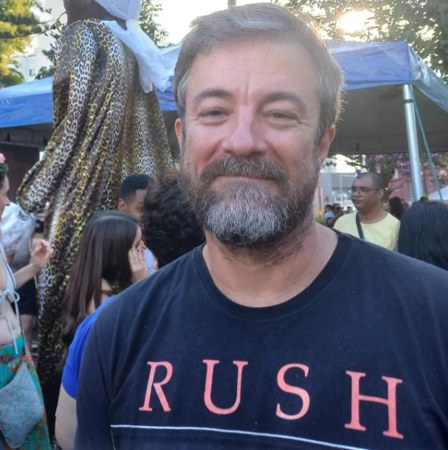

Quem participa da implantação, do cuidado com as mudas e das atividades educativas.
Ecólogo e colaborador do projeto
Wellando Costa
Wellando participou da idealização do Pomar em diálogo com o professor Paulo Palhano e outros colaboradores. Ele atua no planejamento, no manejo das plantas, na identificação das espécies e nas ações de educação ambiental.
“o pomar é uma sala de aula ao ar livre”
Ele explica que o Horto é uma extensão pedagógica do Pomar dedicada ao desenvolvimento e ao manejo das mudas. Segundo seu relato, os apoios ao projeto ajudaram a viabilizar materiais, transporte de mudas, adubação, irrigação e a participação de profissionais.
Em reunião, a equipe distribui as tarefas conforme as demandas. Wellando relata que já houve plantio de espécies nativas e uma aula de campo com estudantes da rede municipal sobre manejo de mudas e práticas agroflorestais. Também conta que a equipe planeja atividades pedagógicas para 2027.
Fonte · Respostas escritas enviadas em 16 de novembro de 2026.
Bolsista e estudante de Letras (Língua Portuguesa)
Graziele Tobias
Graziele conheceu o projeto quando ele ainda era uma ideia. O interesse em contribuir com o meio ambiente motivou sua participação. Hoje, ela pesquisa, acompanha as mudas e o espaço e ajuda a planejar atividades.
Uma das experiências que mais a marcou foi irrigar as mudas e perceber as necessidades de cada espécie. Ela também lembra do plantio de palmeiras no campus e conta que a equipe distribui as tarefas de acordo com a disponibilidade de cada integrante.
“uma sala de aula sem limites”
Graziele diz que o trabalho permite retomar, na prática, conhecimentos de um curso na área de Ciências Agrárias que frequentou entre 2022 e 2023. Para ela, uma visita escolar ao Pomar pode ajudar as crianças a pensar sobre como fazem parte da natureza e como podem cuidar dela.
Fonte · Depoimento escrito de Graziele Tobias.

Professor e vice-coordenador do projeto
Nilton Bittencourt
Nilton descreve o Pomar como um laboratório vivo. Ele propõe trilhas orientadas em que as turmas possam observar árvores, frutos e aves, além de aprender a identificar as plantas pelo nome popular e científico.
Na entrevista, ele aponta como possibilidades em estudo o aproveitamento da água da chuva, a compostagem e o levantamento das árvores do campus. Também destaca a participação dos trabalhadores terceirizados no planejamento e na manutenção e a contribuição dos saberes da comunidade, incluindo os da aldeia Jaraguá.
Fonte · Síntese da entrevista com o professor Nilton Bittencourt.
Registro de campo
Salomão, o Jardineiro Ninja
Durante a visita ao Pomar Pedagógico, Salomão acompanhou o grupo pela área de plantio e apresentou algumas das plantas que cultiva, como mangueiras, palmeiras e abacateiros. Ao mostrar outros exemplares, falou sobre as diferenças de aroma e explicou por que uma das plantas fica melhor à sombra.
Na conversa, o grupo observou cascas de ovos e de frutas separadas para virar adubo. Salomão também comentou que estava fazendo um teste para ver se uma planta criaria raízes e falou sobre a escolha de um local adequado para o plantio.
Trechos da conversa de campo
Cultivo à sombra. Salomão explica por que mantém uma planta em um local sombreado.
Resíduos para adubo. O grupo conversa sobre o reaproveitamento de cascas de ovos e de frutas.
Teste de enraizamento. Salomão mostra um teste para observar se uma planta cria raízes.
Salomão junto à bandeja
Salomão manuseia o material de uma bandeja durante a visita. Vídeo sem áudio (20 s).
 Pomar Pedagógico
Pomar Pedagógico